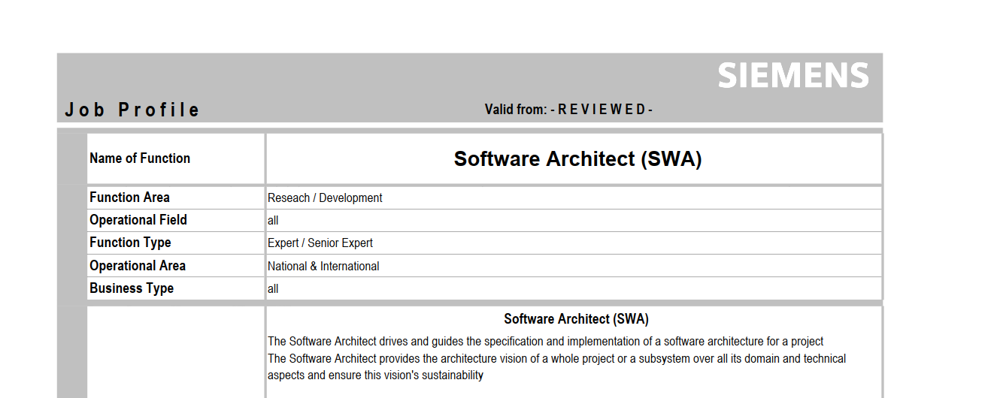
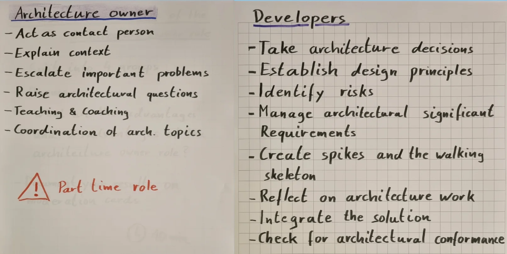
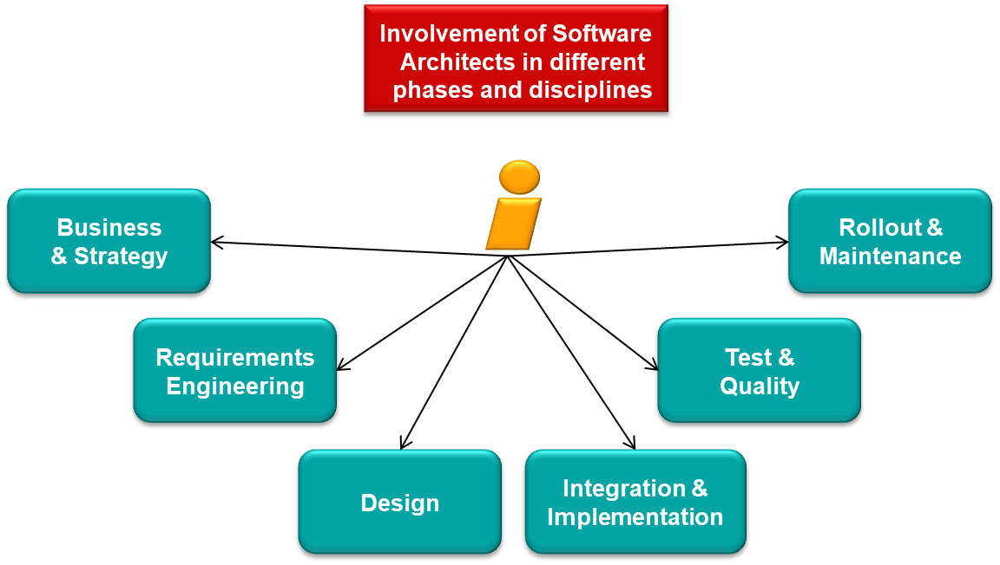
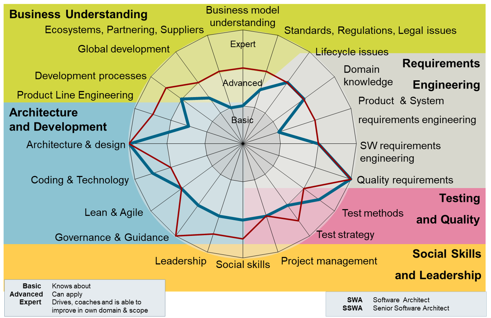
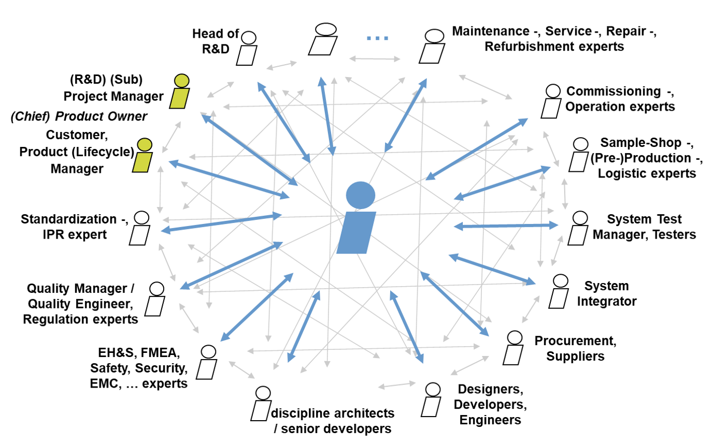

Role of the Siemens SWA: the role of the software architect
According to Siemens, the SWA is responsible for an effective technical solution in a software development project. They verify the clarity and feasibility of requirements, elaborate alternatives, drive the decision making about the solution, and help the team realize the architecture. They lead technically without direct disciplinary authority. The role therefore does not end with producing a diagram: it also covers requirements, risks, implementation, quality and communication with the involved roles.
Relation to testing: An architectural decision only becomes convincing once it is clear how it will be verified that the solution meets the important functional and quality requirements. LOPO explicitly expects the architect to support tests that validate the architecture — especially integration and non-functional tests — to work with architectural risks, and to design for testability.

Job Profile (PDF)

#Definitions and basic terms
| Term | Definition and meaning in architecture | Meaning in testing | Typical exam mistake |
|---|---|---|---|
| Siemens Software Architect (SWA) | The role responsible for defining, assessing and enforcing the technical concept of the software realization. Assesses requirements, alternatives, quality, cost and changes. | Helps determine which architectural assumptions and risks must be verified by tests; this does not replace the tester or the test architect. | Confusing responsibility for the architecture with an obligation to personally write every design and every test. |
| Architectural decision and trade-off | A choice between feasible alternatives according to requirements, constraints, risks and consequences. The SWA profile explicitly mentions elaborating alternatives and driving the decision process. | A decision must lead to verifiable expectations: for example an interface test, behaviour under failure, or response time. Own synthesis. | Stating only the selected technology, not the reason for the choice and its drawbacks. |
| Quality requirement | A requirement on a property of the solution, for example performance, modifiability or robustness. In LOPO, the precision and testability of quality requirements is part of the architect's work. | Must be formulated so that the verification conditions and the expected result can be determined. | Declaring "the system must be robust" to be a sufficiently testable requirement. |
| Testability | A property of the design that allows the test situation to be controlled effectively and its result to be observed; LOPO explicitly works with controllability and observability. | Determines whether a relevant state or failure can be triggered and the system's reaction reliably detected. | Equating testability with the number of automated tests. |
| Architectural risk | The uncertainty that the design will not meet an important requirement or that an assumption of the solution will not hold. Siemens emphasizes knowing the biggest project risks and the alternatives. | Risk helps set the priority and the level of verification; LOPO requires architectural risks to be linked to test levels. | Testing everything evenly, but not verifying the riskiest interface. |
| Architecture owner | Working interpretation for this topic: a team member explicitly entrusted with the ongoing care of architectural decisions and their realization in the implementation, possibly developing software at the same time. LOPO asks for this role to be discussed but provides no single definition. | May maintain the link between the design, integration tests and discovered defects. The scope of authority must be clarified in the project. Own synthesis. | Taking the word owner as proof that a single person approves every detail. |
An example, not a description of an internal product: In an industrial embedded module, a decision may be to separate input processing from diagnostics. The architectural question is which behaviour and timing constraint must be preserved; the testing question is how to trigger a failure state and observe the reaction at the interface. The trade-off may lie between stronger separation of responsibilities and the cost of communication between the parts of the system. Own synthesis.
#Introduction, responsibilities and the boundaries of the role
#Why the role is needed
Siemens describes experienced architects as important for successful solutions and for the long-term outcome of projects. The SWA complements the product role: business and product goals must be translated into a feasible technical concept that holds up even when requirements and technologies change. LOPO therefore connects a sustainable architecture with responsibility for the result of the software project.
#Responsibilities of the "classical" software architect
- Clarify the problem and the requirements. The meaning and feasibility of system, customer or market requirements and their translation into software requirements are verified. For quality requirements, their precision and verifiability are examined as well.
- Design and assess alternatives. Not only the preferred technology should be presented; the main alternatives, risks and the reasons for the decision must be known.
- Drive the realization of the architecture. The SWA profile requires guiding and steering the architecture so that timely and cost-appropriate realization with adequate quality is possible. This includes leading developers and involving experts from other life-cycle phases.
- Maintain shared understanding. LOPO requires up-to-date documentation of the architecture and the decisions, including what was chosen and why. Documentation is a means of communication and is meant to be reviewed.
- Verify the quality of the result. LOPO expects the architect to participate in the test strategy, in verifying integration and non-functional properties, in working with test results, and in continuously assessing whether the architecture is right and implemented correctly.
An important boundary: Responsibility for the technical concept is not the same as exclusive ownership of all product priorities, of all tests, or disciplinary management of the team. The programme overview explicitly mentions leading without disciplinary authority; the concrete split of decision rights must be set in the project.
#Competences and skills
The SWA profile distinguishes architectural and development skills, requirements engineering, quality assurance, domain knowledge and social competences. It also lists a basic competence in software testing; this must not be read as testing being unimportant for the architect, because LOPO at the same time assigns them concrete responsibilities for testability and for verifying the architecture. The difference is between describing the level of one competence in the profile and the practical outcomes expected in the learning programme.
| Competence group | What must be explainable in the exam | Link to testing |
|---|---|---|
| Technical and methodical | Designing structures and interfaces, working with alternatives, patterns and design tactics, justifying decisions. | Which design assumption can be verified by a prototype, a review or a test. Own synthesis. |
| Domain and product | Understanding the customer's problem, the solution environment and the consequences of constraints; not choosing an architecture in isolation from how the product is used. | Choosing realistic scenarios, operating conditions and risks. Own synthesis. |
| Requirements and quality | Uncovering an unclear or conflicting requirement, assessing feasibility and the testability of a quality. | Translating a quality goal into a verifiable criterion and evaluating the results. |
| Communication and leadership | Leading a technical discussion, explaining decisions to different stakeholders, obtaining feedback and leading without formal power. | Aligning design assumptions with the test strategy and addressing findings in time. Own synthesis. |
| Project and business thinking | Assessing time, cost, risk and long-term sustainability as part of a technical choice. | Prioritizing verification by impact and uncertainty, not only by ease of automation. Own synthesis. |
What must be said: A competent SWA connects the problem domain, the technical design, quality and people. What is good to add: This is not about being a universal specialist in every discipline; what matters is the ability to bring in the right expert in time. The SWA profile explicitly accounts for involving experts from later phases, for example operation and service.

#Communication and the role in the team
Communication is not a "soft add-on" to a finished architecture. Siemens requires the SWA to be able to explain the relevant views of the architecture, coach developers, motivate the team and gain support without disciplinary authority. The profile also lists a broad circle of contacts, including product and project roles, requirements engineers, other architects, developers, integrators, testers, service experts and customers.
The following typical conversation topics are own synthesis on top of this list of roles:
| With whom | Why the communication matters | Typical topics |
|---|---|---|
| Product owner / product and project management | Aligning value, scope, deadline and technical risk. | Priorities, solution variants, cost of change, technical debt. |
| Requirements engineer and domain expert | Preventing a design built on an unclear assumption. | Meaning of a requirement, boundary states, quality scenarios. |
| Developers, integrators and other architects | Carrying decisions into the actual design and interfaces. | Component responsibilities, integration contracts, design changes. |
| Tester / test architect / quality | Verifying risks and qualities that unit tests alone cannot prove. | Testability, integration and non-functional tests, interpretation of findings. |
| Operations, service and relevant specialists | Capturing the consequences of decisions beyond the implementation phase. | Diagnostics, maintainability, environment constraints and solution handover. |
Exam formulation: "The architect does not only communicate the finished design. Through communication they obtain requirements and constraints, negotiate trade-offs, enable the team to realize the decisions, and ensure feedback from testing."

#The classical architect versus the architecture owner as a part-time role
A working distinction, not a single Siemens organizational definition: "Classical architect" here means a person with an explicit, broader mandate to do architectural work across the life cycle. "Part-time architecture owner" denotes a member of the delivery team who, alongside development work, continuously cares for the architectural coherence of a defined area. In both cases what matters is the actual scope of responsibility, the capacity and the way of collaborating, not the role title itself. LOPO requires the advantages and disadvantages of the architecture owner to be discussed; another Siemens description, for example, distinguishes a team architect scoped to a single team from product and platform architects with a broader scope. These terms, however, cannot automatically be equated with a "part-time architecture owner".
| Model | Potential benefit | Potential risk |
|---|---|---|
| Classical architect with a broader mandate | Room for long-term decisions, cross-team coordination and a more independent view of the design. | With weak contact to the implementation, decisions that are hard to apply in daily work may arise. Own synthesis. |
| Architecture owner, part-time in the team | Short feedback from code and tests; architectural questions can be caught during implementation. | Development tasks may crowd out work on quality, documentation and risks; the owner may become a bottleneck. Own synthesis. |
Seven trade-offs to discuss in the exam (own synthesis):
- Closeness to the implementation × distance for strategic decision making.
- Fast local decisions × coherence across teams.
- Using an experienced developer × their limited capacity for architecture.
- A clearly named responsible person × the risk that the team stops co-deciding.
- Continuous verification in code × lack of time for integration and quality risks.
- Fewer handover interfaces between design and development × the chance of missing independent feedback.
- A pragmatic role for a defined area × an unclear mandate for decisions affecting the whole product.
How to formulate the decision: The part-time model may be suitable if the architectural scope is bounded, dedicated capacity exists, decision rights are clear, and decisions exceeding the team can be escalated. If the work involves fundamental cross-team interfaces, conflicting qualities or extensive architectural risks, it must be assessed whether partial capacity is sufficient. This is not a universal Siemens rule, but a design criterion. Own synthesis.
#Common mistakes and anti-patterns
| Mistake | Why it is a problem and how it shows up | Prevention |
|---|---|---|
| The architecture is just a document | The document may be formally correct, yet the implementation and tests drift away from it. | Continuously compare decisions with the implementation and the verification results; keep the reasons for decisions up to date. |
| A decision without alternatives and criteria | The trade-off cannot be defended, nor can the impact of changed assumptions be assessed. | Record the problem, the variants, the decision criteria and the consequences. |
| A vague quality requirement | The team and the testers may interpret "sufficient performance" differently. | Clarify the conditions and the measurable expected result before choosing a solution. |
| A test strategy derived only from the code structure | Tests for interfaces, operational scenarios and architectural risks may be missing. | Assign the important risks to suitable verification levels; include integration and non-functional tests. |
| "Automated" means "testable" | An automated test may be unable to trigger the critical state or to reliably recognize a wrong result. | Assess the controllability of the test situation and the observability of the reaction separately. |
| The architect decides in isolation | Requirements, implementation constraints and testing insights never reach the decision. | Hold the discussion with the relevant roles and adapt the explanation of decisions to them. |
| A part-time owner without dedicated capacity | Architectural tasks stay "for later"; risks appear only during integration. | Explicitly define responsibilities, capacity, deputization and the escalation path. Own synthesis. |
#Exam questions
For every answer it is useful to follow the order definition → reason → impact on the design → way of verification → trade-off.
#Basic questions
- What is the main responsibility of the Siemens SWA? Good answer: an effective technical solution; clarifying the feasibility of requirements, alternatives, driving the realization, quality.
- Why does an architect need communication skills? Good answer: to achieve shared understanding and to carry a technical decision through without disciplinary authority.
- Which roles does the SWA communicate with? Good answer: name several groups from the SWA profile and explain the concrete purpose of the communication for each, not just list titles.
#Intermediate questions
- How does a quality requirement translate into the architect's work? Good answer: making it precise, assessing feasibility, choosing a design tactic and verifying the result.
- What is the difference between responsibility for the architecture and personally performing all tests? Good answer: the architect ensures that architectural risks and qualities have an adequate means of verification; they collaborate with the testing roles.
- What must the explanation of an architectural decision contain? Good answer: context, alternatives, criteria, consequences and assumptions that can be verified. The structure of the answer is own synthesis.
#Advanced questions
- How do you tell that an architecture is designed correctly but implemented incorrectly? Good answer: distinguish assessing the design against the requirements from assessing the actual implementation against the design; use reviews and relevant tests.
- How would you design the verification of failure behaviour in an embedded system? Good answer: determine the observable reaction, the way to trigger the failure, the interfaces, the timing constraints and the suitable test level. Own synthesis.
- How do you resolve a conflict between two quality goals? Good answer: clarify the priorities and the conditions of use, compare the variants, describe the sacrifices and verify the critical assumptions.
#Questions about practical experience
- Describe a decision that was changed after the result of an integration test. Good answer: the original assumption, the test finding, the new variants and the documented reason for the change.
- How would the team improve the testability of a hard-to-reproduce defect? Good answer: separate the ability to set the input conditions from the ability to observe the result; state the impact on the design.
#Trade-off decision questions
- When do you choose a part-time architecture owner and when an architect with broader dedicated capacity? Good answer: scope, risks, cross-team dependencies, available capacity, mandate and feedback from the implementation. Own synthesis.
- Should the owner approve every technical decision? Good answer: distinguish strategic decisions with broader impact from local team decisions; describe the bottleneck risk. Own synthesis.
#Model exam answer
A coherent speech draft of roughly 4–6 minutes; the formulations and the example are own synthesis, the definition of the role and the expectations are based on the Siemens source material.
"The role of the Siemens Software Architect consists in being responsible for an effective technical solution of a software project. It is not only about drawing the structure of the system. The architect helps clarify the requirements and their feasibility, creates and compares alternatives, drives the decision process and supports the team in realizing the chosen solution. The goal is an architecture that enables delivering software with adequate quality, cost and time, even when requirements change.
For the architecture it is essential that decisions connect the customer's problem with the concrete responsibilities of the parts of the system, the interfaces and the technical constraints. Before a decision one must therefore know which requirements are architecturally significant, what the biggest uncertainties are, and what will be lost by choosing one variant. For instance, a faster implementation may worsen the possibility of later change; stronger separation of components may in turn increase the complexity of their communication. A good answer from an architect does not only say 'I chose this variant', but also 'under which assumptions this variant is suitable and how we will know that the assumptions hold'. The Siemens requirement to know the alternatives and their advantages and disadvantages is essential at this point.
The relevance for testing is direct. A quality requirement that cannot reasonably be verified gives insufficient support either to the design or to the acceptance of the result. The architect therefore collaborates on making it precise and considers whether the design allows the necessary test conditions to be created and the response to be observed. Further, they determine which architectural assumptions are the riskiest. Those should not be left to unit tests alone if they concern, for example, the interplay of components or the behaviour of the system as a whole. LOPO explicitly emphasizes testability, risk-oriented testing, and integration and non-functional tests that validate the architecture.
As an illustration, consider an industrial embedded module in which input data processing and diagnostics are being designed. A requirement may stipulate the reaction to a certain failure and its timing constraint. The architect must determine where the responsibility for detection and reaction lies, which interfaces are used, and what happens with invalid or delayed data. At the same time, it must be clarified with the testing roles how the failure is safely triggered, how the reaction is measured, and at which level the interplay of the parts of the system will be verified. This is an example of design reasoning, not a statement about a concrete Siemens product.
Communication is equally important. The architect works with product and project roles on priorities and constraints, with the requirements engineer on the meaning of requirements, with developers and other architects on interfaces, and with testers on verifying risks. Their influence is not based on formal authority alone. Siemens describes leading the team without disciplinary authority; decisions must therefore be understandable, justified and acceptable to those who will realize them.
Finally, the role has to be distinguished from the organizational model. A classical architect with a broader mandate may have more room for the long-term coherence of the solution. A part-time architecture owner inside the team may, by contrast, be closer to the code and the tests. Their advantage is fast feedback, their disadvantage the risk of insufficient time for cross-team questions, documentation and systematic verification. The choice therefore depends on the scope and the risks of the project, not on which title sounds better.
In summary: a good SWA connects requirements, alternatives, technical decisions, realization and quality verification. An architecture is successful when the team understands it, is able to realize it, and there is evidence that it fulfils the essential requirements."
#11. Short version for quick revision
Five main points
- The SWA is responsible for an effective technical concept and its realization, not just for a document.
- They clarify the feasibility of requirements, the alternatives and the biggest risks.
- They lead technically and communicate across roles without disciplinary authority.
- They connect design quality with testability, integration and non-functional tests.
- A part-time architecture owner is a trade-off between closeness to the implementation and capacity for broader architectural work. Own synthesis.
Five terms: SWA; architectural decision; quality requirement; testability; architectural risk.
Three mistakes: a decision without alternatives; a vague requirement with no way to verify it; an owner without a clear mandate and time.
One model sentence: "The task of the SWA is to turn important requirements and risks into justified architectural decisions, to help the team realize them, and to ensure that their result can be verified."
#Learning outcome: what must be demonstrable after studying
For this topic LOPO requires being able to list and describe the responsibilities of the classical architect, discuss the necessary skills, explain the importance of communication, identify the key communication partners and their topics, and analyse the advantages and disadvantages of the architecture owner. The practical outcome is meant to be a short pitch about responsibilities, skills and communication in a concrete project.
Exam self-check of your answer:
- Must say: the mission of the role, the responsibilities, the stakeholders, the alternatives and the risks.
- Good to add: the relation between an architectural decision, a quality requirement and its verification.
- Avoid: claiming that the architect "only designs", that automation alone guarantees testability, or that a part-time owner is universally a suitable model.
- Show architectural reasoning: state the variants, the selection criteria and the consequences.
- Show understanding of testing: determine what evidence would confirm or refute a key design assumption.
- Formulate the trade-off: "Variant A improves X, but increases cost or risk Y; given these requirements I choose A, because…, and I will verify the assumption by…"
#Summary in one table
| Area | What matters | Relation to architecture | Relation to testing | Typical exam question |
|---|---|---|---|---|
| Mission of the SWA | An effective and feasible technical solution. | Connecting requirements, variants and realization. | Verifying the key design assumptions. | "What is the SWA responsible for?" |
| Responsibilities | Requirements, alternatives, decisions, driving the realization. | A sustainable concept even under change. | Risks and quality properties feed into the verification strategy. | "Where does design end and responsibility for realization begin?" |
| Competences | Technical, domain, quality and social skills. | Deciding in context, not an isolated technology choice. | Assessing testability and test results. | "Why is being an excellent programmer not enough?" |
| Communication | Shared understanding and leading without disciplinary authority. | Acceptance and correct realization of decisions. | Aligning the design with test scenarios and findings. | "With whom and about what does the architect talk?" |
| Part-time architecture owner | Define the mandate, the scope and the capacity. Own synthesis. | Closeness to the team versus broader coherence. | Fast feedback versus the risk of neglecting systematic verification. | "When does this model make sense and when does it not?" |